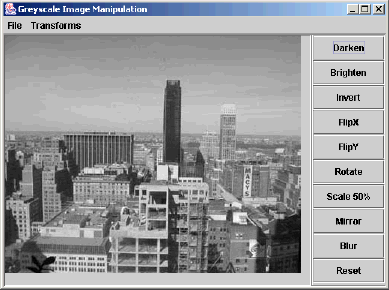

|
|||||||||
| PREV PACKAGE NEXT PACKAGE | FRAMES NO FRAMES | ||||||||
See:
Description
| Interface Summary | |
|---|---|
| ITransformations | Classes implementing the ITransformations interface can be
used with the ImageTransformerGUI class to transform grey-scale images. |
| Class Summary | |
|---|---|
| ImageTransformerGUI | The ImageTransformerGUI provides a graphical user interface (GUI) for
transforming graphic images via a class implementing ITransformations
provided to its constructor. |
| SampleTransformations | A sample class implementing the ITransformations interface. |
The imageTransformation package provides a graphical user interface (GUI) for a student-written class to transform images using a two-dimensional array of integers.
The idea for this package and some of the initial code is from "Teaching Two-Dimensional Array Concepts in Java With Image Processing Examples" by Kevin R. Burger in SIGCSE Bulletin, Volume 35, Number 1, March 2003, pages 205-209.
The GUI appears like this:
A typical main method to run this program would be
import becker.xtras.imageTransformation.*;
public class Main
{
public static void main(String[] args)
{ ITransformations trans = new MyTransformations();
ImageTransformerGUI theGUI = new ImageTransformerGUI(trans);
}
}
where MyTransformations is written by the student and implements
the ITransformations
interface. The package includes a class,
SampleTransformations, that
may be used to demonstrate the graphical user interface.
The available transformations are given by the
getTransformationNames
method. It returns an array of strings that contains the transformation names.
A button and a menu item is created for each name. When the button or menu
item is selected, the
performTransformation
method is called with the
string as an argument. It can then call an appropriate helper method to perform
the transformation.
This program uses the Model-View-Controller pattern. The class implementing ITransformations
is the model. It must arrange to update the views each time the model's state (that is, one of
its instance variables) changes. This can be done easily with code such as the following:
import becker.util.IView;
import becker.util.ViewList;
public class Transform implements ITransformations
{
private ViewList views = new ViewList();
...
public void stateChangingMethod()
{ ...
this.views.updateViews();
}
public void addView(IView aView)
{ this.views.addView(aView);
}
}
|
|||||||||
| PREV PACKAGE NEXT PACKAGE | FRAMES NO FRAMES | ||||||||